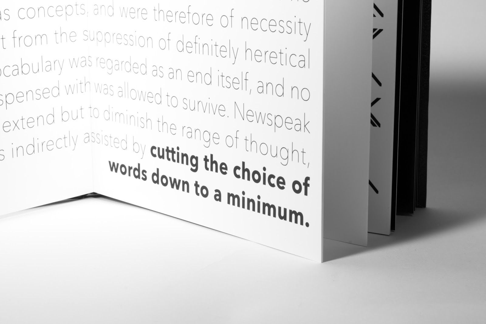
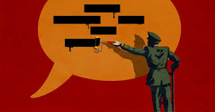

Theme 5 of 5
Censorship
Do all countries get First Amendment rights like we do in the US or are they like 1984?
In The Book
What We See In 1984
- The official language of Newspeak is designed to limit rebellious through through linguistic determinism
- The Thought Police and the Youth Spies both monitor the population to find individuals who show thoughts against the Party
- The Ministry of Truth constatly rewrite history in order to make it match what they want it to say
Quote
“Newspeak was designed not to extend but to DIMINISH the range of thought, and this purpose was indirectly assisted by cutting the choice of words down to a minimum.”
(pg 300)
Real Life
Modern Example
- The Greate Firewall of China is used to block external information the CCP doesn't want the people to have access to
- Protests are suppresed such as with Tiananmen Square, where access to any relating information is banned
- The media is heavily controlled to only show pro CCP content and support their ideals
